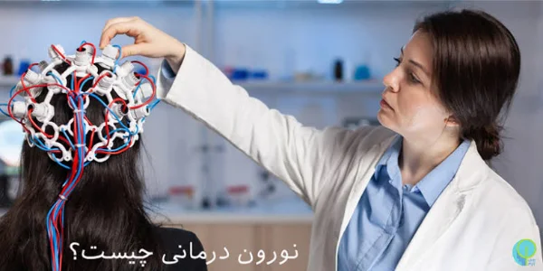
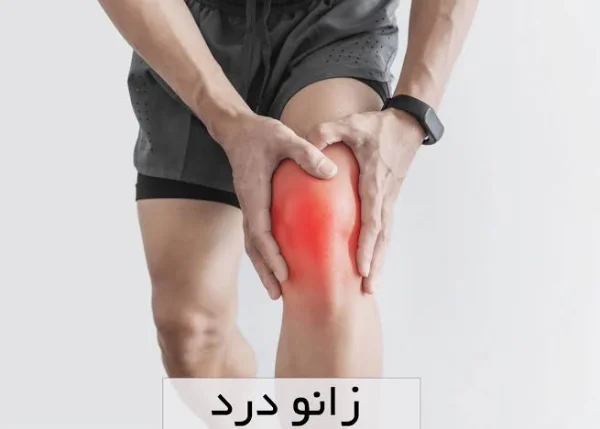

مطلب برگزیدهمغز و اعصاب
فواید نوروتراپی
نوروتراپی چیست و چه فوایدی دارد؟ روشهای TMS، نوروفیدبک و tDCS، کاربردهای تأییدشده، عوارض و زمان مراجعه به پزشک.
۳ دقیقه مطالعه
مطالب ساده و بهروز دربارهٔ سلامت، بر پایهٔ منابع معتبر پزشکی؛ برای اینکه بدانید کی و پیش کدام پزشک بروید.
نوروتراپی چیست و چه فوایدی دارد؟ روشهای TMS، نوروفیدبک و tDCS، کاربردهای تأییدشده، عوارض و زمان مراجعه به پزشک.
۳ دقیقه مطالعه

فشار خون چند باید باشد و از چه عددی بالا حساب میشود؟ جدول فشار خون طبق راهنمای ۲۰۲۵ انجمن قلب آمریکا، علائم بحران فشار خون و زمان مراجعه به پزشک.
۳ دقیقه مطالعه
چرا پوست در زمستان خشک میشود و چطور از آن مراقبت کنیم؟ نکتههای متخصصان پوست دربارهٔ حمام، مرطوبکننده، ضدآفتاب زمستانی و زمان مراجعه به پزشک.
۳ دقیقه مطالعه

آیا نوروتراپی واقعاً جواب میدهد؟ بررسی شواهد علمی دربارهٔ TMS، نوروفیدبک و tDCS، تأییدهای FDA تا سال ۲۰۲۵، عوارض و نکتههای انتخاب مرکز درمان.
۳ دقیقه مطالعه

شایعترین علتهای درد زانو از آسیب رباط و مینیسک تا آرتروز، مراقبت در خانه، علائم هشداری که نیاز به اورژانس دارند و زمان مراجعه به متخصص ارتوپدی.
۳ دقیقه مطالعه
زنان در هر سن به چه معاینات و غربالگریهایی نیاز دارند؟ پاپ اسمیر و تست HPV، ماموگرافی از ۴۰ سالگی، تراکم استخوان و واکسن HPV طبق راهنماهای جدید.
۳ دقیقه مطالعه
در چکآپ سالانهٔ بزرگسالان چه آزمایشهایی لازم است؟ فشار خون، قند و چربی خون، هپاتیت C، HIV و غربالگری سرطان روده بر اساس سن، طبق راهنماهای USPSTF.
۲ دقیقه مطالعه
مطلبی با این جستجو پیدا نشد.
سؤال پزشکی دارید؟با پزشکان متخصص کلینیک نیکان حضوری یا آنلاین مشورت کنید.
دریافت نوبتمطالب مجله سلامت برای آگاهی عمومی است و جایگزین معاینه و مشورت با پزشک نیست.